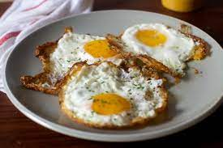

Fried Egg

Description
A simple, yet amazing egg. It's defined by a nice crispy bottom and a nice runny yolk.
Ingredients
- Egg
- Oil
- Salt
- Black Pepper
Steps
- Heat pan to medium-high. Add oil.
- Crack egg into pan, but beware of oil splashes!
- Cook egg until crispy on the bototm, and just before yolk becomes cooked.
- Season with salt and black pepper. Enjoy!